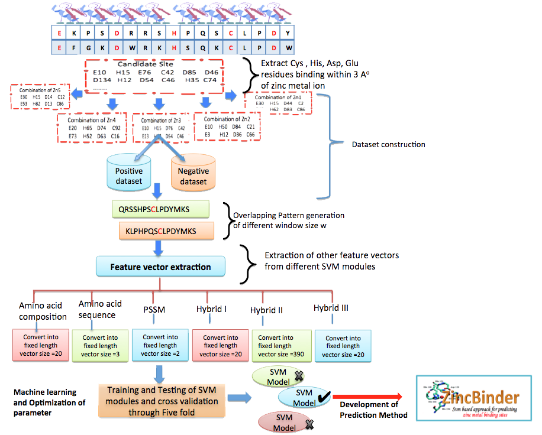

Complete workflow of whole prediction algorithm |
|  |
Support vector machine |
The support vector machines (SVM) is a novel machine learning method which has been sucessfully applied to various classification and pattern recognition area .The SVM has been shown to perform better in cllasifying functional protein.The SVM always seeks global hyperplane to separate the both classes of examples in training set and avoid overfitting. The hyperplane found by SVM is one that maximise the separating margins between both binary classes.The SVM was implemented using freely downloadable software package SVM_light written by Joachims (Joachims 1999) and can be downloadable from http://svmlight.joachims.org/.The software enables the user to define a number of parameters as well as to select from a choice of inbuilt kernal functions, including a radial basis function (RBF) and a polynomial kernal. |
Performance measures |
Five-fold cross-validation |
| The 5-fold cross validation technique examined the prediction quality.In this technique relevant dataset was randomly divided into distinct five subsets. The training and testing was carried out five times, each time using one subset for testing and the remaining four sets for training. The accuracy of results commonly measured by the quantity of True Positives (TP), True Negatives (TN), False Positives (FP) and False Negatives (FN). In the prediction system the total prediction accuracy, Mathew's correlation co-efficient (MCC), sensitivity and specificity was calculated by following equations. |
| Sensitivity = (TP / (TP+FN))*100 |
| Specificity = (TN / (TN+FP))*100 |
| Accuracy = (TP+TN / (TP+FP+TN+FN))*100 |
| MCC = (TP * TN) - (FP*FN) / Ö(TP+FN)* (TP+FP)*(TN+FP)*(TN+FN). |
| Where TP and TN are correctly predicte zinc metal binding sites and non-zincmetal binding sites respectively. FP and FN are wrongly predicted zinc metal binding sites and non-zincmetal binding sites respectively. |
ZincBinder is maintained by Department of Biophysics, University of Delhi South Campus. We acknowledge your comments or contribution to this resources. Please send your sugestions to Dr. Manish Kumar (Email:manish at south dot du dot ac dot in)